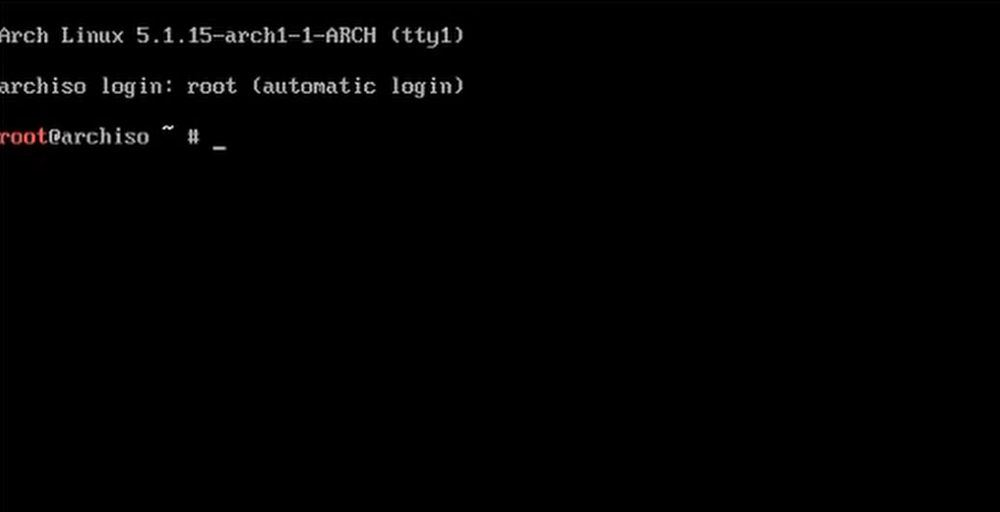
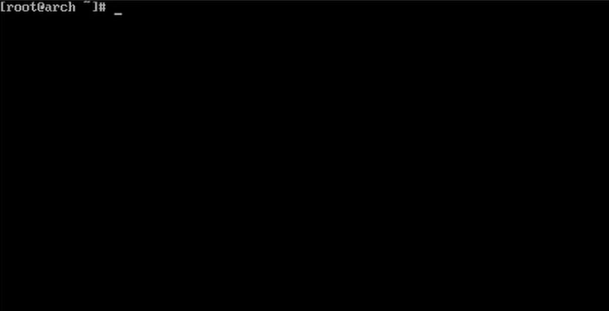
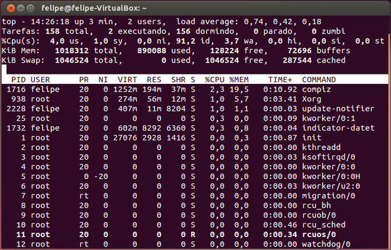
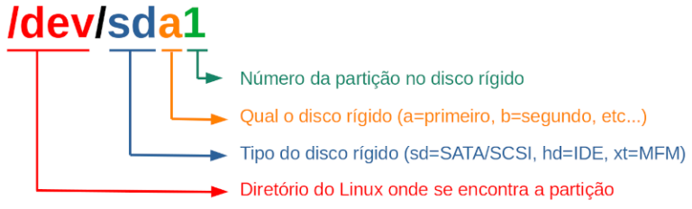

Introdução ao
Sistema Operacional
O Arch Linux é uma Distribuição Linux que foi criada por Judd Vinet. As grandes características desse sistema são: flexibilidade, velocidade, simplicidade e minimalismo.
Essa distribuição Linux utiliza o modelo Rolling Release. Esse modelo se traduz na simplificação das atualizações, uma vez que apenas uma única atualização é necessária para obter a versão mais recente do sistema, tornando-o estável e atualizado tão rapidamente quanto os programas são testados e disponibilizados.
Sem nenhum foco de uso, o Arch atende bem o uso em desktops, estações de trabalho e servidores. Por outro lado, quando o assunto é usuário, seu foco é certo, o Arch segue o propósito "Make Yourself", "Faça você mesmo" em tradução literal, sendo assim, sua principal característica é a possibilidade de personalização quase que completa do sistema operacional por parte do usuário, atraindo aqueles que apreciam poder moldar o sistema a sua maneira.
Instalação do
Sistema Operacional
Um tópico reservado para falar um pouco sobre o processo de instalação desse sistema operacional acaba sendo mais interessante do que falar sobre seus recursos, até porque ele praticamente não tem nenhum. A instalação é feita totalmente pelo terminal de forma totalmente manual, sem a ajuda de interfaces gráficas ou configurações prévias como em outros sistemas, Mac, Windows, ou até ourtras distribuições linux, como o Ubuntu.
Durante a instalação lidamos com várias coisas que, na maioria das vezes, acontecem por debaixo dos panos como particionamento de disco, montagem das partições, criação de arquivos e pastas do sistema, configurar o gerenciador de boot, entre outras coias. Do começo ao fim da instalação a principal caracteristica do Arch se realça, o total controle do sistema e a construção de um ambiente personalizado. Mas não acaba por aí, ao fim da instalação tudo o que se tem do sistema ainda é um terminal, agora ainda podemos excolher quais recursos queremos instalar, desde a interface gráfica até gerenciadores de arquivos, pacotes do linux, entre outras coisas.
Um exemplo do que temos ao início da instalação, à esquerda, e ao final da instalação do sistema, antes da instalação da interface gráfica e dos pacotes, como citado anteriormente, à direita.
 Vantagens / Desvantagens
Algumas das principais vantagens do Arch Linux seriam:
Alto desempenho
Esse sistema possui uma alta performance, quando comparado com os demais, vindo com o mínimo de recursos necessários para se utilizar. Esse minimalismo também permite um alto grau de customização e controle do sistema, uma das características mais marcantes do Arch Linux.
Simplicidade e Minimalismo
Um dos principais conceitos Linux é a sua simplicidade. Essa simplicidade não só é existente no Arch como é enfatizada. O Arch Linux permite com que o usuário instale apenas o que ele precisa, mantendo o sistema em sua máxima rapidez e estabilidade.
Compatibilidade com hardwares antigos
O Arch Linux possui todas as ferramentas básicas das outras distribuições Linux, disponíveis em repositórios online gerenciados pelo Pacman. Dessa forma, seja em um computador moderno ou em um hardware antigo(desde que possua um processador i686 ou superior, isso exclui qualquer processador anterior ao Pentium 2 e outras plataformas), o Arch é possível de ser utilizado sem problemas de funcionamento, uma vez que sua versão utiliza o mínimo de recursos o possível, ao mesmo tempo em que possui um grande poder de customização.
Flexibilidade
O Arch Linux, alem de possuir todas as vantagens do Software Livre / Open Source, desde a sua instalação básica permite que se utilize qualquer versão de kernel* sem causar problemas, além de permitir a instalação de diversos ambientes gráficos. É possível utilizar o KDE, Gnome, XFCE e outros ambientes utilizando o layout padrão, além de se poder alternar entre eles. O fato é que o Arch é um sistema totalmente configurável e transparente.
Comunidade
Além dessas funcionalidades, o Arch Linux também possui uma ampla e ativa comunidade para suporte técnico, que discute tópicos do sistema e é excelente para ajudar os usuários a resolverem problemas simples e complexos sem precisar contratar profissionais. De fato, que o Arch Linux pode ser uma excelente distro para usuários que querem aprender mais sobre Linux e conhecer o sistema operacional mais profundamente.
Pontuando as desvantagens, existe uma principal que acaba por ocasionar várias outras, e ela é a necessidade de um certo grau de conhcimento para se trabalhar com o Arch. A falta desse conhecimento pode acrretar problemas na instalação, ou problemas futuros, como um ambiente cheio de Bugs e até mesmo com falhas de segurança. Outra possibilidade é o usuário não conseguir usufruir de toda aliberdade que a distro oferece, por não conhecer a diversa variedade de pacotes a sua disposição para a customização do sistema.
Por se tratar de uma distribuição Linux, o Arch também pode apresentar outros pontos negativos presentes nas mais variadas distros, como por exemplo, um possível desconforto causado em usuários Windows ou Mac pela falta ou incompatibilidade de aplicativos e programas que, até então, faziam parte de sua rotina.
*Núcleo do sistema, é responsável por conectar o software ao hardware. Desta forma, ele estabelece uma comunicação eficaz entre os recursos do sistema operacional e administra suas funções.
Funcionamento
Gerenciamento de Memória
O Linux é um sistema operacional com memória virtual paginada, isto quer dizer que podemos ter programas em execução cujo tamanho é maior que a memória física disponível para executá-los. O sistema operacional passa a ser responsável por manter na memória as partes dos programas efetivamente em uso, deixando o resto no disco rígido. Por exemplo, um programa de 16MB pode ser executado em uma máquina de 4MB de memória, com o sistema operacional selecionando os 4MB do programa que deverão ser mantidos na memória a cada instante, com as suas partes sendo copiadas do disco rígido para a memória e vice-versa, quando necessário.
No Linux, processos que estão em execução têm prioridade na memória, quando termina um processo e havendo espaço na memória, ficam resíduos desse processo para uma futura volta desse processo ser mais rápida. O 1GB do núcleo não é visível quando o processo executa no modo usuário, mas torna-se acessível quando o processo faz uma chamada ao núcleo. O espaço de endereçamento é gerado quando o processo é criado e sobrescrito em uma chamada ao sistema (exec).
O espaço de endereçamento virtual é dividido em áreas ou regiões organizadas em páginas. Contíguas e homogêneas. Isso quer dizer que cada área consiste em uma série de páginas consecutivas com proteção e propriedades de paginação idênticas. O segmento de código e os arquivos mapeados são exemplos de áreas. Pode haver vazios no espaço de endereçamento virtual entre essas áreas. Qualquer referência à memória para um vazio resulta em uma falta de página fatal (Page fault). O tamanho da página é fixo.
O Linux usa um esquema de paginação de três níveis que também é empregado de maneira modificada em várias arquiteturas. Cada endereço virtual é quebrado em até quatro campos. O campo diretório é usado como índice do diretório global, sendo que existe um privado para cada processo. O valor encontrado é um ponteiro para um dos diretórios intermediários de página, o qual é indexado por um campo do endereço virtual. A entrada selecionada aponta para a tabela de página final, a indexada pelo campo página do endereço virtual. A entrada encontrada aponta para a página requisitada. Para a proteção existe um gerenciador de memória virtual evitando que processos no modo "kernel*" e no modo "User" se misturem.
O Linux gerencia a memória usando o algoritmo companheiro (buddy algorithm), com a adição de um vetor no qual o primeiro elemento é a cabeça de uma lista de blocos com tamanho de uma unidade. O segundo elemento é a cabeça de uma lista de blocos com tamanho de duas unidades. O próximo elemento aponta para blocos de quatro unidade e assim por diante. Dessa maneira qualquer bloco de potência de dois pode ser encontrado rapidamente. A vantagem do algoritmo do companheiro é que facilita a busca de bloco livre, se for implementada com uma estrutura de árvore.
Algoritmo companheiro

No entanto, esse algoritmo gera uma considerável fragmentação interna, pois, se você deseja um bloco de 65 páginas, você tem de solicitar e obter um bloco de 128 páginas. A fragmentação é resolvida pelo kernel* com um processo de desfragmentação que junta espaço preenchidos de memória que são categoricamente semelhantes. Isto é feito com uma segunda alocação de memória que obtêm blocos, usando o algoritmo companheiro, e depois os retalha (unidades menores) para gerenciar unidades menores separadamente.
Um terceiro alocador de memória também é utilizado quando a memória solicitada precisa ser contígua somente no espaço virtual, mas não na memória física. Para a proteção existe um gerenciador de memória virtual evitando que processos no modo "kernel*" e no modo "User" se misturem.
*Núcleo do sistema, é responsável por conectar o software ao hardware. Desta forma, ele estabelece uma comunicação eficaz entre os recursos do sistema operacional e administra suas funções.
Funcionamento
Gerenciamento de Processos
Um processo é um termo de máquina utilizado para descrever uma aplicação ou um programa. Por exemplo, quando abrimos um navegador de Internet como o Google Chrome, podemos dizer que um processo, responsável pela execução do Google Chrome, até fecharmos o navegador.
PID e PPID
Um PID (Process Identifier) é um número de identificação que o sistema dá a cada processo. Para cada novo processo, um novo número deve ser atribuído, ou seja, não se pode ter um único PID para dois ou mais processos ao mesmo tempo.
Os sistemas baseados em Unix precisam que um processo já existente se duplique para que a cópia possa ser atribuída a uma tarefa nova. Quando isso ocorre, o processo "copiado" recebe o nome de "processo pai", enquanto que o novo é denominado "processo filho". É nesse ponto que o PPID (Parent Process Identifier) passa a ser usado: o PPID de um processo nada mais é do que o PID de seu processo pai.
UID e GID
Cada processo precisa de um proprietário, um usuário que seja considerado seu dono. A partir daí, o sistema saberá, através das permissões fornecidas pelo proprietário, quem pode e quem não pode executar o processo em questão. Para lidar com os donos, o sistema usa os números UID e GID.
O Linux gerencia os usuários e os grupos através de números conhecidos como UID (User Identifier) e GID (Group Identifier). Como é possível perceber, UID são números de usuários e GID são números de grupos. Os nomes dos usuários e dos grupos servem apenas para facilitar o uso humano do computador.
Cada usuário precisa pertencer a um ou mais grupos. Como cada processo (e cada arquivo) pertence a um usuário, logo, esse processo pertence ao grupo de seu proprietário. Assim sendo, cada processo está associado a um UID e a um GID.
Os números UID e GID variam de 0 a 65536. Dependendo do sistema, o valor limite pode ser maior. No caso do usuário root, esses valores são sempre 0 (zero). Assim, para fazer com que um usuário tenha os mesmos privilégios que o root, é necessário que seu GID seja 0.
Escalonamento de Processos
O kernel* do Linux realiza o escalonamento de processos da seguinte forma:
- Cada processador (core) só consegue executar uma tarefa por vez
- Time sharing: Como cada processador só executa uma tarefa por vez, o que o kernel* faz é rotacionar os processos entre as CPUs disponiveis, determinando que cada processo utilize a CPU por algum tempo
- Esse rotacionamento, ou escalonamento, é feito automaticamente pelo kernel*, que se baseia nos tipos de processos em execução.
Tipos de Processos
De maneira geral, podemos classificar os processos nos seguintes tipos:
- Convencional: Processos normais do sistema.
-
- O kernel* dá a esses processos os valores de prioridades de 100 a 139, sendo 120 o padrão. Sendo 100 significa maior prioridade, ou seja, terá mais tempo de uso da CPU, maior time sharing. Nesse caso 139 é a menor prioridade, menor tempo.
- Tempo Real: Processos que precisam ser executados imediatamente, não obedecendo o escalonamento de processos.
-
- Normalmente são processos internos do kernel*.
- Esses processos recebem as prioridades de 1 a 99, e é comum que seja representado pelo código “rt”, de real-time.
Exemplo de um gerenciador de processos
*Núcleo do sistema, é responsável por conectar o software ao hardware. Desta forma, ele estabelece uma comunicação eficaz entre os recursos do sistema operacional e administra suas funções.
Funcionamento
Gerenciamento de Dispositivos
A gerência de entrada/saída no Unix, o Linux é um sistema baseado em Unix, foi desenvolvida de forma integrada ao sistema de arquivos. O acesso aos dispositivos de E/S é feito através de arquivos especiais, localizados no diretório /dev.
Os arquivos especiais podem ser acessados da mesma forma que qualquer outro arquivo, utilizando simplesmente as system calls de leitura e gravação. Isso permite enviar o mesmo dado para diferentes dispositivos de saída. Dessa forma, as system calls de E/S podem manipular qualquer tipo de dispositivo de maneira uniforme.
As versões mais recentes do Unix e o Linux permitem que os drivers possam ser acoplados ao núcleo com sistema em funcionamento, sem a necessidade de gerar um novo kernel* e reinicializar o sistema.
Funcionamento
Gerenciamento de Arquivos
Partições
Podemos dividir um disco rígido em várias partes ou partições, onde cada partição é independente das outras, ou seja, cada partição pode ter o seu próprio sistema de arquivo e um diferente sistema operacional. Isto significa que uma partição do disco não interfere nas outras partições. Podemos, por exemplo, instalar o Linux em uma partição e o Windows em outra partição.
Atualmente existem dois padrões que determinam como os dados são armazenados no disco.
- MBR (Master Boot Record) – padrão antigo que só permite 4 partições (chamadas de primárias) no mesmo disco. Por isso, costuma-se usar a quarta partição como partição estendida para criar várias partições lógicas (em outras áreas do disco).
- GPT (GUID Partition Table) – pode criar 128 ou mais partições (depende do sistema operacional usado). Neste caso, não há necessidade de criar partição estendida (embora seja possível).
O Linux utiliza a seguinte nomenclatura para identificar discos e partições:
Por exemplo, podemos ter:
- /dev/sda1 – Primeira partição do primeiro disco rígido SATA ou SCSI.
- /dev/sda2 – Segunda partição do primeiro disco rígido SATA ou SCSI.
- /dev/sdb1 – Primeira partição do segundo disco rígido SATA ou SCSI.
- /dev/sdb2 – Segunda partição do segundo disco rígido SATA ou SCSI.
- /dev/hda1 – Primeira partição do primeiro disco rígido IDE
- /dev/hda2 – Segunda partição do primeiro disco rígido IDE.
- /dev/hdb1 – Primeira partição do segundo disco rígido IDE.
- /dev/hdb2 – Segunda partição do segundo disco rígido IDE.
No exemplo abaixo, um disco de 1 TeraByte é dividido em 2 discos. O primeiro disco tem duas partições: a primeira partição com 512 MB possui o sistema EFI (Extensible Firmware Interface) que é responsável pela inicialização do sistema; a segunda partição com 931 GB possui os arquivos do sistema. O segundo disco de 119,2 GB é usado como área de dados.
- /dev/sda1 2048 1050623 1048576 512M Sistema EFI
- /dev/sda2 1050624 1953523711 1952473088 931G Linux sistema de arquivos
- /dev/sdb1 2048 250068991 250066944 119,2G Linux sistema de arquivos
O programa mais comumente usado no Linux para particionar discos é o fdisk . O problema com este aplicativo é que ele destrói os dados armazenados ao particionar o disco.
Sistemas de arquivos
- Um sistema de arquivos é um conjunto de estruturas lógicas que permite o sistema operacional controlar o acesso a um dispositivo de armazenamento como disco rígido, pen drive, cd-room, etc. Diferentes sistemas operacionais podem usar diferentes sistemas de arquivos.
- A partição Linux nativo é conhecida por diretório raiz do Linux e é representada por /.
- Atualmente, o NTFS (New Technology File System) é o sistema de arquivos padrão do Windows, enquanto o ext4 é o do Linux.
- Para verificar quais os sistemas de arquivos que o seu Linux suporta, basta verificar o conteúdo do arquivo /proc/filesystems.
- O suporte para diferentes sistemas de arquivos pode ser obtido através de módulos de kernel* carregáveis no diretório /lib/modules/XXX/kernel*/fs, onde XXX é a versão atual do Linux.
Linux
No Linux, um diretório (corresponde ao conceito de pasta do Windows) pode ter outros diretórios ou arquivos. Dizemos que um diretório é filho de outro diretório quando ele está logo abaixo do diretório em questão. O diretório que está um nível acima é chamado de diretório pai.
O diretório raiz do Linux (ou diretório /) é o diretório com maior hierarquia entre todos os diretórios do sistema. Isto significa que todos os diretórios do Linux ficam abaixo deste diretório.
Convém também observar que é possível colocar os subdiretórios do diretório raiz em partições separadas. O objetivo é facilitar a manutenção do sistema e aumentar a segurança dos dados. Portanto, a distribuição do diretório raiz em várias partições é uma escolha pessoal do administrador do sistema. Normalmente, é sugerido que os seguintes diretórios possuam uma partição própria: /home, /opt, /tmp, /usr e /usr/local.
*Núcleo do sistema, é responsável por conectar o software ao hardware. Desta forma, ele estabelece uma comunicação eficaz entre os recursos do sistema operacional e administra suas funções.